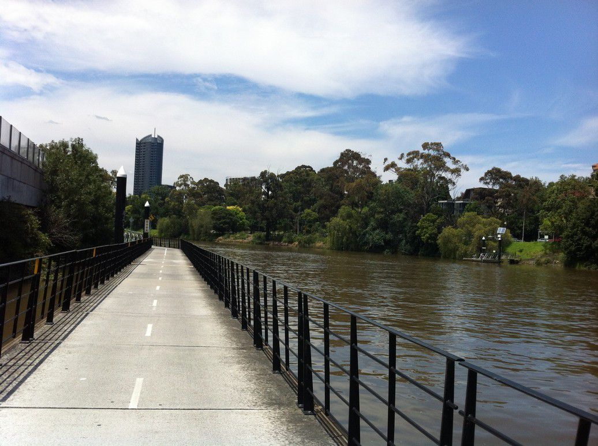
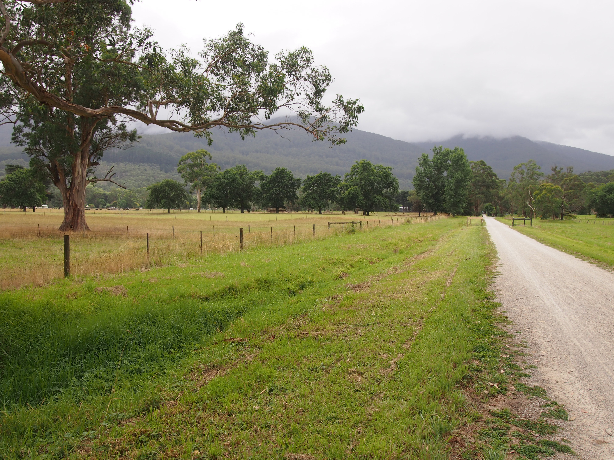
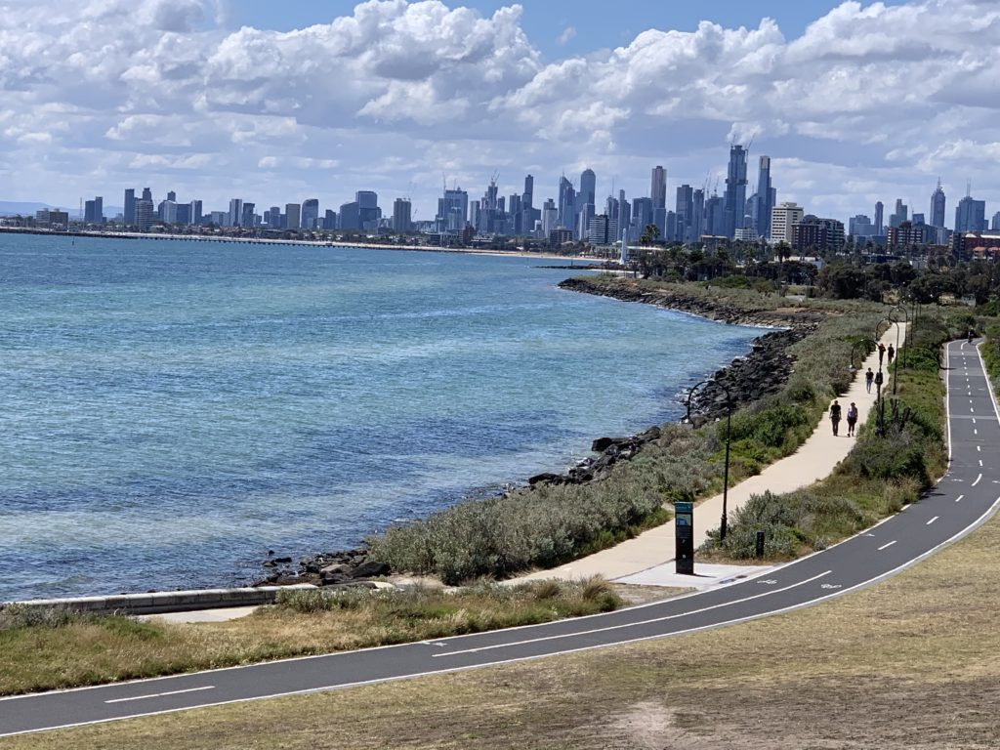

Bike Trails
Capital City Trail

The Capital City Trail circles the city centre and some inner eastern and northern suburbs. It is 29km in length, and mostly consists of sections of other trails, such as the Merri Creek Trail, Main Yarra Trail, Moonee Ponds Creek Trail and Inner Circle Rail Trail.
Lilydale to Warburton

Since the closure of the Warburton railway line in July 1965 and the dismantling of the track in the 1970s the land had remained vacant. Over the years this 38kms trail was developed & establishment in 1996. Since then it has been one of the favourite bike trails in Melbourne.
St Kilda Beach to Half Moon Bay

This 13kms beachside bike path has the best views of St Kilda, Brighton and Sandrigham beaches ending at Half Moon Bay. The bikes can be rented at St Kilda if you dont have one.